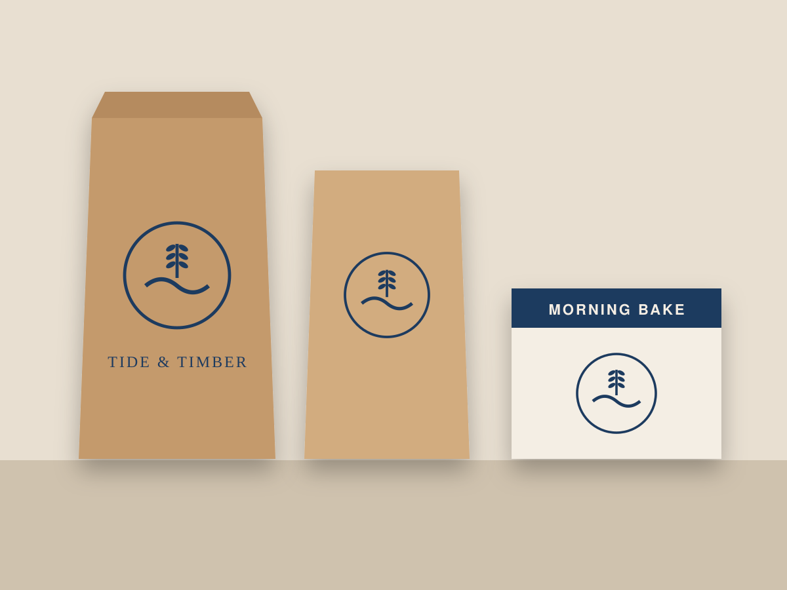
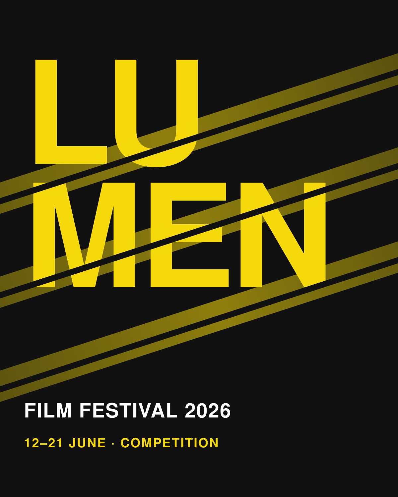
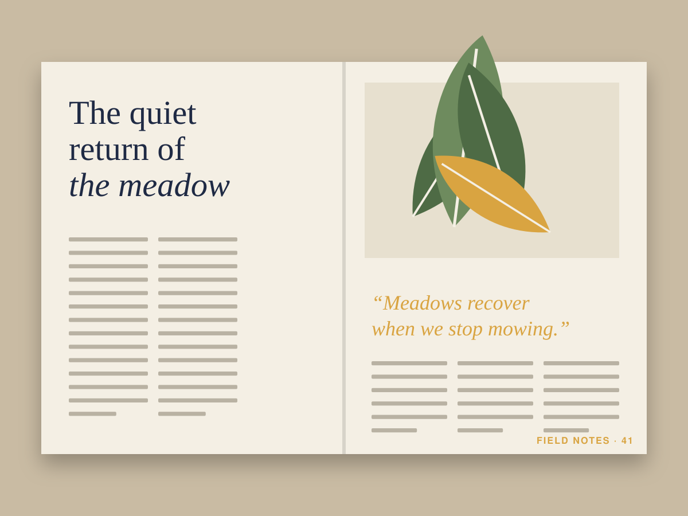
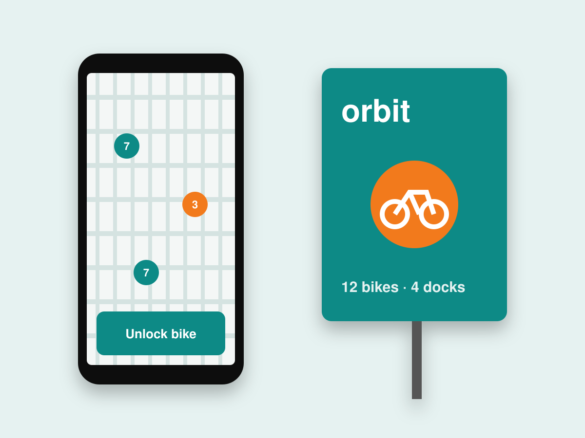
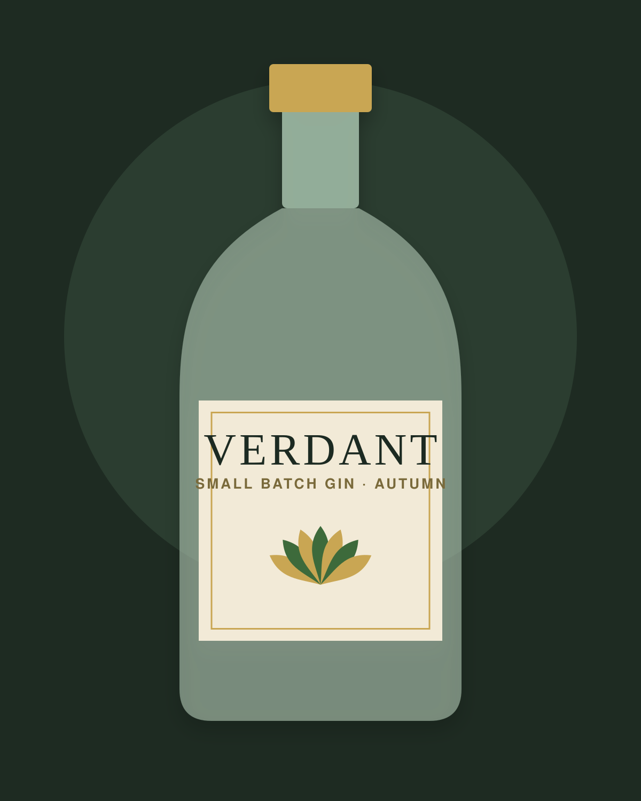
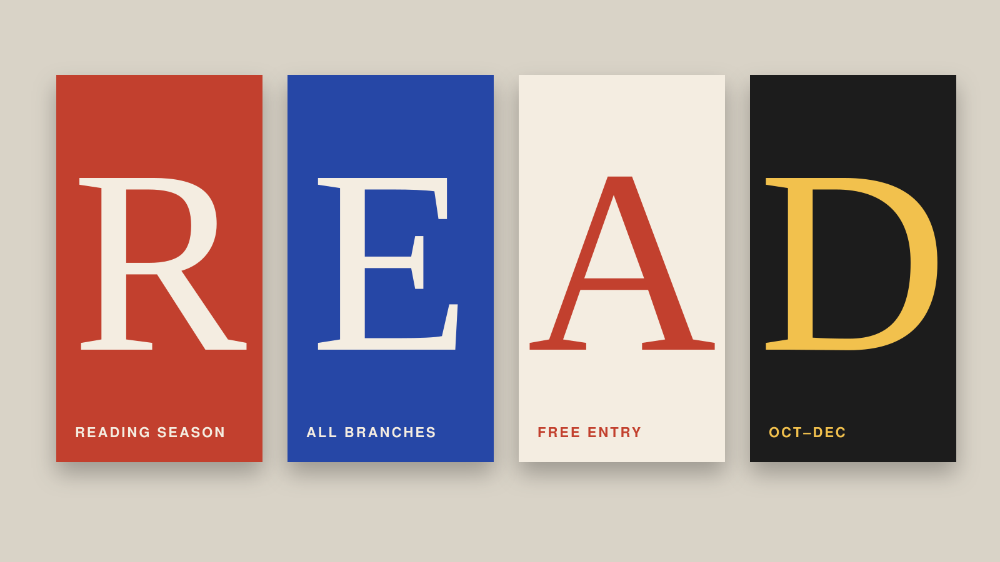
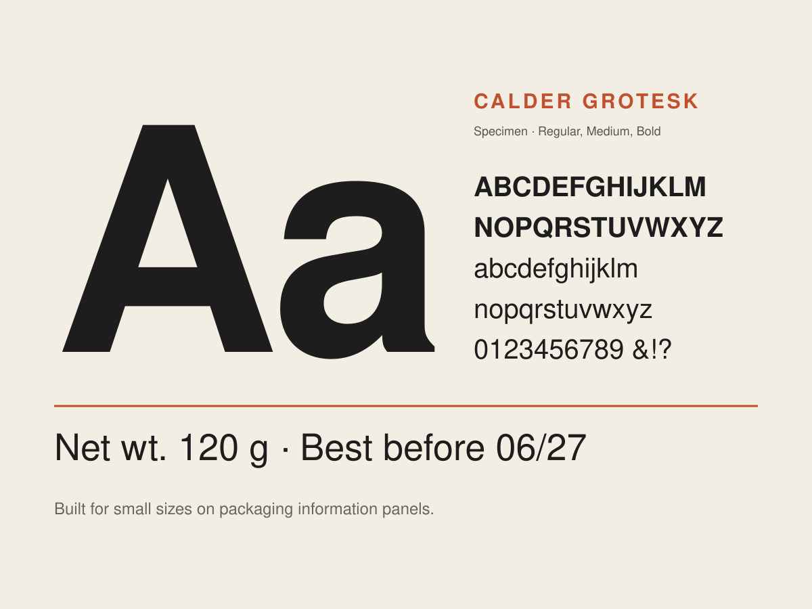
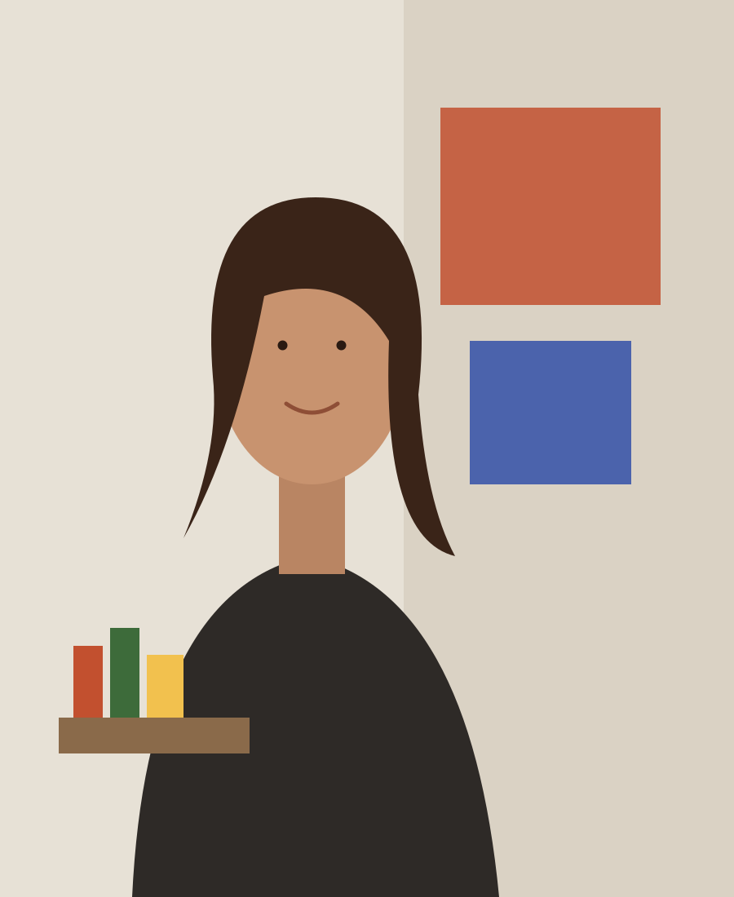

Tide & Timber Bakery
Stamped kraft packaging for a neighbourhood bakery that bakes in small batches every morning.
Case study in preparationSample portfolio. Names, projects and copy are placeholders for a template preview — see the pre-launch checklist.
Brand identity & packaging designer
Iris Calder creates brand identity systems and packaging for independent food, drink and cultural organizations so they can be recognised on a crowded shelf and remembered after the event.
Booking new projects from February 2027 · Lisbon, Portugal · WET (UTC+0 / UTC+1 in summer)

I'm an independent designer in Lisbon. I build identity systems — logos, type, colour, packaging and campaign assets — for small teams who need their brand to work hard across many touchpoints without a big in-house design department.
Selected work

A tidal identity and tinned-oyster range for a family farm moving from wholesale into delis and restaurants.
Read case study
A light-leak campaign system for a ten-day independent film festival across posters, trailers and social.
Read case study
A redesign of an independent nature magazine around a flexible grid that makes long reads easier to follow.
Read case study
Stamped kraft packaging for a neighbourhood bakery that bakes in small batches every morning.
Case study in preparation
App screens and station wayfinding that make unlocking a bike understandable at a glance.
Case study in preparation
A botanical label system for a small-batch gin that changes its garnish illustration with every season.
Case study in preparation
A city-wide reading campaign built from oversized letterforms that branches print in-house.
Case study in preparation
A self-initiated type specimen exploring a sturdy grotesk for packaging information.
Case study in preparationNo projects in this discipline yet.
Services
Four clearly scoped offers. Every project starts with a free 30-minute discovery call.
01
02
Testimonial placeholder
Add a real quote from a client about a packaging project. Do not publish invented praise.
03
04
Pricing is scoped per project after a discovery call; no fixed prices are published.

About
I spent eight years in packaging and branding studios before going independent (sample bio). I like brands that are made by real people: oyster farmers, bakers, festival programmers, editors. My job is to give them a system they can actually run — one that works on a cheap two-colour print and on a billboard.
I work best embedded with small teams: a founder, a marketing lead, sometimes a copywriter and a printer. I bring in trusted collaborators for motion, photography and web development when a project needs them.
Process
Typical identity projects run 8–12 weeks. You'll always know what's next and when I need your feedback.
1
What to expect: One kickoff workshop (90 min). You share existing materials within 3 business days.
2
What to expect: One feedback round on territories. Written approval before design begins.
3
What to expect: Two included revision rounds; feedback windows of 3–5 business days.
4
What to expect: Final files within 5 business days of sign-off; 30 days of launch support.
Start a project
Share a little context and I'll reply with questions, a rough timeline and the next step. I reply to every inquiry within two business days.
Booking new projects from February 2027
Check your connection and try again, or email hello@iriscalder.example directly. Your answers are still in the form.